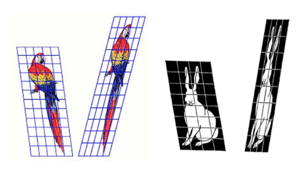
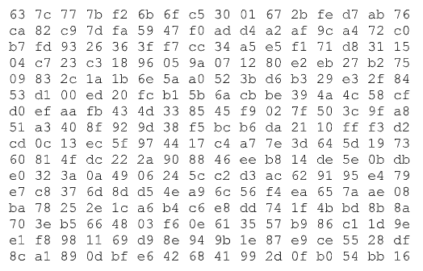
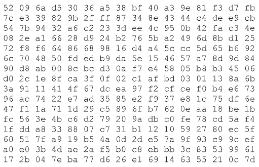
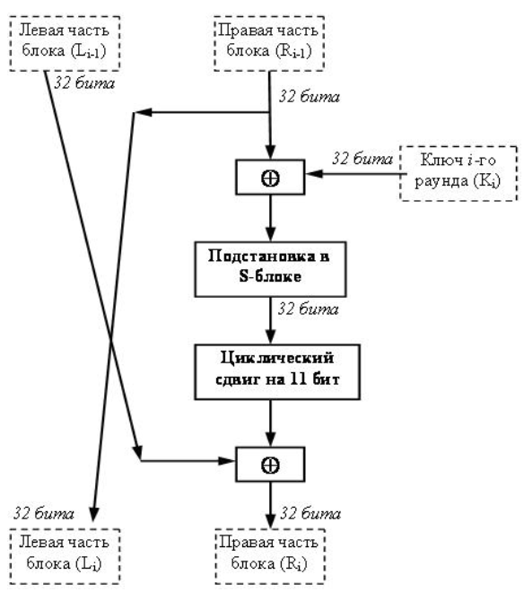
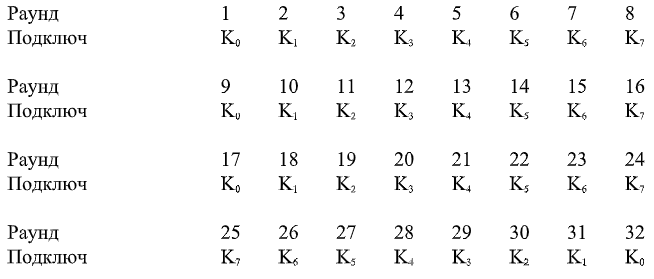
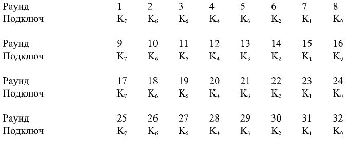
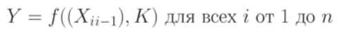

Advanced Encryption Standard (AES), также известный как Rijndael (Рэндал)) — симметричный алгоритм блочного шифрования (размер блока 128 бит, ключ 128/192/256 бит), принятый в качестве стандарта шифрования правительством США по результатам конкурса AES.
Этот алгоритм хорошо проанализирован и сейчас широко используется, как это было с его предшественником DES . Национальный институт стандартов и технологий США ( англ. National Institute of Standards and Technology, NIST) опубликовал спецификацию AES 26 ноября 2001 года после пятилетнего периода, в ходе которого были созданы и оценены 15 кандидатур. 26 мая 2002 года AES был объявлен стандартом шифрования.
Этот алгоритм преобразует один 128-битный блок в другой, используя секретный ключ который нужен для такого преобразования. Для расшифровки полученного 128-битного блока используют второе преобразование с тем же секретным ключом. Выглядит это так:
cipher = encrypt(block, key) // шифруем block с помощью key
block = decrypt(cipher, key) // расшифровываем cipher с помощью key
Размер блока всегда равен 128 бит. Размер ключа также имеет фиксированный размер. Чтобы зашифровать произвольный текст любым паролем можно поступить так:
Это можно записать так:
hash = md5(password) // MD5 хеш имеет длину 128 бит
key = keyexpansion(hash) // преобразуем хеш в ключ
blocks = split(text, 16) // разбить текст на блоки по 16 байт
for (i = 0; i < blocks.length; i++)
cipher[i] = encrypt(blocks[i], key)
Чтобы расшифровать массив блоков cipher нужно применить к каждому блоку decrypt:
hash = md5(password)
key = keyexpansion(hash)
for (i = 0; i < cipher.length; i++)
blocks[i] = decrypt(cipher[i], key)
text = merge(blocks) // соединить все блоки в одну строку
Конечно, длина текста может быть не кратна 128 битам. В таких случаях можно дополнить текст нулями до нужной длины, а в зашифрованные данные добавить несколько байт с зашифрованным размером оригинального текста.
AES активно использует так называемое конечное поле GF(2^8). Чтобы написать AES на JavaScript не обязательно знать, что это за поле.
Поле GF(2^8) это числа 0..255 для которых определили особое умножение и особое сложение.
Эта таблица представляет собой 256-байтый массив и используется для замены одного байта другим. Не обязательно понимать как она получается, потому что в код можно просто скопировать этот массив. Чтобы узнать чему равен элемент SBox[b] нужно три действия:
В сумме эти три действия дают афинное преобразование
Построенная таблица выглядит так:
Для дешифрования текста AES использует таблицу обратную к SBox. Таблица InvSBox обладает одним свойством: InvSBox[SBox[i]] = i. InvSBox выглядит так:
Алгоритм AES преобразует блок длиной 128 битов в другой блок той же длины. Для преобразования применяется расписание ключей w получаемое из ключа. 128-битный блок в AES представляется в виде матрицы 4×N b . Стандарт допускает только одно значение N b = 4, поэтому длина блока всегда 128 бит, хотя алгоритм может работать с любым N b . Длина ключа равна 4N k байт. Алгоритм шифрования блока состоит из N r раундов — применений одной и той же группы преобразований к 128-битному блоку данных. Стандарт допускает следующие комбинации этих трёх параметров:
| Nk | Nb | Nr | |
| AES-128 | 4 | 4 | 10 |
| AES-192 | 6 | 4 | 12 |
| AES-256 | 8 | 4 | 14 |
Для шифрования текста AES применяет не пароль или хеш от пароля, а так называемое «расписание ключей» получаемое из ключа. Это расписание можно представить как N r + 1 матриц размера 4×N b . Алгоритм шифрования делает N r + 1 шагов и на каждом шаге он, помимо других действий, берёт одну матрицу 4×N b из «расписания» и поэлементно добавляет её к блоку данных.
Алгоритм шифрования получает на вход 128-битный блок данных input и расписание ключей w, которое получается после KeyExpansion. 16-байтый input он записывает в виде матрицы s размера 4×N b , которая называется состоянием AES, и затем N r раз применяет к этой матрице 4 преобразования. В конце он записывает матрицу в виде массива и подаёт его на выход — это зашифрованный блок. Каждое из четырёх преобразований очень простое.
Для шифрования используют [a b c d] = [{02} {03} {01} {01}]. Можно проверить, что преобразование обратное к MixColumns[{02} {03} {01} {01}] это MixColumns[{0e} {0b} {0d} {09}].
Как видно, для шифрования блока данных AES последовательно применяет к нему много обратимых преобразований. Для расшифровки нужно применить обратные преобразования в обратном порядке.
http://crypt-online.ru/crypts/aes/
ГОСТ 28147-89 (Магма) — российский стандарт симметричного блочного шифрования,
принятый в 1989 году. Полное название — «ГОСТ 28147-89 Системы обработки
информации. Защита криптографическая. Алгоритм криптографического преобразования».
Является примером DES-подобных криптосистем, созданных по классической
итерационной схеме Фейстеля.
В России в качестве стандарта на блочные алгоритмы шифрования с закрытым ключом в 1989 году был принят ГОСТ 28147-89. Он рекомендуется к использованию для криптографической защиты данных. Шифр, предлагаемый ГОСТ 28147-89 построен по тем же принципам, что и американский DES, однако по сравнению с DES отечественный стандарт шифрования более удобен для программной реализации.
В отличие от американского DES в отечественном стандарте применяется более длинный ключ – 256 бит. Кроме того, российский стандарт предлагает использовать 32 раунда шифрования, тогда как DES – только 16.
Таким образом, основные параметры алгоритма криптографического преобразования данных ГОСТ 28147-89 следующие: размер блока составляет 64 бита, размер ключа – 256 бит, количество раундов – 32.
Алгоритм представляет собой классическую сеть Фейштеля. Шифруемый блок данных разбивается на две одинаковые части, правую R и левую L. Правая часть складывается с подключом раунда и посредством некоторого алгоритма шифрует левую часть. Перед следующим раундом левая и правая части меняются местами. Такая структура позволяет использовать один и тот же алгоритм как для шифрования, так и для дешифрования блока.
В алгоритме шифрования используются следующие операции:
На различных шагах алгоритмов ГОСТа данные, которыми они оперируют, интерпретируются и используются различным образом. В некоторых случаях элементы данных обрабатываются как массивы независимых битов, в других случаях – как целое число без знака, в третьих – как имеющий структуру сложный элемент, состоящий из нескольких более простых элементов.
Структура одного раунда ГОСТ 28147-89 приведена на рис. 5.1.
Шифруемый блок данных разбивается на две части, которые затем обрабатываются как отдельные 32- битовые целые числа без знака. Сначала правая половина блока и подключ раунда складываются по модулю 232. Затем производится поблочная подстановка. 32-битовое значение, полученное на предыдущем шаге (обозначим его S), интерпретируется как массив из восьми 4-битовых блоков кода: S=(S0 ,S1 ,S2 ,S3,S4 ,S5 ,S6 ,S7 ). Далее значение каждого из восьми блоков заменяется на новое, которое выбирается по таблице замен следующим образом: значение блока Si заменяется на Si -тый по порядку элемент (нумерация с нуля) i-го узла замен (т.е. i-той строки таблицы замен, нумерация также с нуля). Другими словами, в качестве замены для значения блока выбирается элемент c номером строки, равным номеру заменяемого блока, и номером столбца, равным значению заменяемого блока как 4-битового целого неотрицательного числа. В каждой строке таблицы замен записаны числа от 0 до 15 в произвольном порядке без повторений. Значения элементов таблицы замен взяты от 0 до 15, так как в четырех битах, которые подвергаются подстановке, может быть записано целое число без знака в диапазоне от 0 до 15. Например, первая строка S-блока может содержать такие значения: 5, 8, 1, 13, 10, 3, 4, 2, 14, 15, 12, 7, 6, 0, 9, 11. В этом случае значение блока S0 (четыре младших бита 32-разрядного числа S) заменится на число, стоящее на позиции, номер которой равен значению заменяемого блока. Если S0 = 0, то оно заменится на 5, если S0 = 1, то оно заменится на 8 и т.д.
Рис. 5.1. Структура одного раунда ГОСТ 28147-89
После выполнения подстановки все 4-битовые блоки снова объединяются в единое 32-битное слово, которое затем циклически сдвигается на 11 битов влево. Наконец, с помощью побитовой операции "сумма по модулю 2" результат объединяется с левой половиной, вследствие чего получается новая правая половина Ri . Новая левая часть Li берется равной младшей части преобразуемого блока: Li = Ri-1.
Полученное значение преобразуемого блока рассматривается как результат выполнения одного раунда алгоритма шифрования.
ГОСТ 28147-89 является блочным шифром, поэтому преобразование данных осуществляется блоками в так называемых базовых циклах. Базовые циклы заключаются в многократном выполнении для блока данных основного раунда, рассмотренного нами ранее, с использованием разных элементов ключа и отличаются друг от друга порядком использования ключевых элементов. В каждом раунде используется один из восьми возможных 32-разрядных подключей.
Рассмотрим процесс создания подключей раундов. В ГОСТ эта процедура очень проста, особенно по сравнению с DES. 256-битный ключK разбивается на восемь 32-битных подключей, обозначаемых K0,K1,K2,K3, K4,K5,K6,K7. Алгоритм включает 32 раунда, поэтому каждый подключ при шифровании используется в четырех раундах в последовательности, представленной на таблица 5.1.
Таблица 5.1. Последовательность использования подключей при шифровании
Процесс расшифрования производится по тому же алгоритму, что и шифрование. Единственное отличие заключается в порядке использования подключей Ki . При расшифровании подключи должны быть использованы в обратном порядке, а именно, как указано на таблица 5.2.
Таблица 5.2. Последовательность использования подключей при расшифровании
ГОСТ 28147-89 предусматривает следующие режимы шифрования данных: простая замена, гаммирование, гаммирование с обратной связью и один дополнительный режим выработки имитовставки.
В любом из этих режимов данные обрабатываются блоками по 64 бита, на которые разбивается шифруемый массив, именно поэтому ГОСТ 28147-89 относится к блочным шифрам. В режимах гаммирования есть возможность обработки неполного блока данных размером меньше 8 байт, что существенно при шифровании массивов данных с произвольным размером, который может быть не кратным 8 байтам.
Режим простой замены. Этот режим использования блочного шифра аналогичен рассмотренному в лекции 4 режиму простой поблочной замены (ECB). В этом режиме каждый блок исходных данных шифруется независимо от остальных блоков, с применением одного и того же ключа шифрования. Особенностью этого режима является то, что одинаковые блоки исходного текста преобразуются в одинаковый шифротекст. Поэтому ГОСТ 28147-89 рекомендует использовать режим простой замены только для шифрования ключей.
Режимы гаммирования и гаммирования с обратной связью могут использоваться для шифрования данных произвольного размера.
В режиме гаммирования биты исходного текста складываются по модулю 2 с гаммой, которая вырабатывается с помощью алгоритма шифрования по ГОСТ 28147-89. То есть алгоритм шифрования по ГОСТ 28147-89 в данном режиме используется в качестве генераторов 64-разрядных блоков гаммы. При шифровании каждого нового блока данных гамма, использованная на предыдущем шаге, зашифровывается и используется уже как "новая" гамма. В качестве начального массива данных, шифруемых для получения самой первой гаммы, используется так называемая синхропосылка – 64-разрядный начальный блок данных, который должен быть одинаковым на шифрующей и расшифровывающей стороне. Благодаря тому, что наложение и снятие гаммы осуществляется при помощи одной и той же операции сложения по модулю 2, алгоритмы зашифрования и расшифрования в режиме гаммирования совпадают.
Так как все элементы гаммы различны для реальных шифруемых массивов, то результат зашифрования даже двух одинаковых блоков в одном массиве данных будет различным. Кроме того, хотя элементы гаммы и вырабатываются одинаковыми порциями в 64 бита, использоваться может и часть такого блока с размером, равным размеру шифруемого блока. Именно это дает возможность шифрования неполных блоков данных.
Режим гаммирования с обратной связью похож на режим гаммирования и отличается от него только способом выработки элементов гаммы. При гаммировании с обратной связью очередной 64-битный элемент гаммы вырабатывается как результат преобразования по базовому циклу алгоритма ГОСТ 28147-89 предыдущего блока зашифрованных данных. Для зашифрования первого блока массива данных элемент гаммы вырабатывается как результат преобразования по тому же циклу синхропосылки. Этим достигается зацепление блоков – каждый блок шифротекста в этом режиме зависит от соответствующего и всех предыдущих блоков открытого текста. Поэтому данный режим иногда называется гаммированием с зацеплением блоков. На стойкость шифра факт зацепления блоков не оказывает никакого влияния.
Для решения задачи обнаружения искажений в зашифрованном массиве данных в ГОСТе 28147-89 предусмотрен дополнительный режим криптографического преобразования – выработка имитовставки. Имитовставка – это контрольная комбинация, зависящая от открытых данных и секретной ключевой информации. Целью использования имитовставки является обнаружение всех случайных или преднамеренных изменений в массиве информации. В режиме выработки имитовставки входной текст обрабатывается блоками следующим образом:
где f – базовый цикл по ГОСТ 28147-89; Xi – 64-разрядный блок исходного текста; K – ключ.
В качестве имитовставки берется часть блока Yn , полученного на выходе, обычно 32 его младших бита.
Таким образом, злоумышленник, не владея ключом шифрования, не может вычислить имитовставку для заданного открытого массива информации, а также подобрать открытые данные под заданную имитовставку.
Несмотря на то, что алгоритм, изложенный в ГОСТ 28147-89, проектировался достаточно давно, в него заложен достаточный запас по надежности. Это связано, прежде всего, с большой длиной ключа шифрования.
Как известно, разработчики современных криптосистем придерживаются принципа, что секретность зашифрованных сообщений должна определяться секретностью ключа. Это значит, что даже если сам алгоритм шифрования известен криптоаналитику, тот, тем не менее, не должен иметь возможности расшифровать сообщение, если не располагает соответствующим ключом. Все классические блочные шифры, в том числе DES и ГОСТ 28147-89, соответствуют этому принципу и спроектированы таким образом, чтобы не было пути вскрыть их более эффективным способом, чем полным перебором по всему ключевому пространству, т.е. по всем возможным значениям ключа. Ясно, что стойкость таких шифров определяется размером используемого в них ключа.
В шифре, реализуемом в ГОСТ 28147-89, используется 256-битовый ключ, и объем ключевого пространства составляет 2256 . Даже если, как и в "Алгоритмы шифрования DES и AES" , предположить, что на взлом шифра брошены все силы вычислительного комплекса с возможностью перебора 1012 (это примерно равно 240 ) ключей в одну секунду, то на полный перебор всех 2256 ключей потребуется 2216 секунд (это время составляет более миллиарда лет).
К уже отмеченным отличиям между алгоритмами DES и ГОСТ 28147 можно добавить также следующее. В основном раунде DESприменяются нерегулярные перестановки исходного сообщения, в ГОСТ 28147 используется 11-битный циклический сдвиг влево. Последняя операция гораздо удобнее для программной реализации. Однако перестановка DES увеличивает лавинный эффект. В ГОСТ 28147 изменение одного входного бита влияет на один 4-битовый блок при замене в одном раунде, который затем влияет на два 4- битовых блока следующего раунда, три блока следующего и т.д. В ГОСТ 28147 требуется 8 раундов прежде, чем изменение одного входного бита повлияет на каждый бит результата; DES для этого нужно только 5 раундов.
Также следует отметить, что в отличие от DES, у ГОСТ 28147-89 таблицу замен для выполнения операции подстановки можно произвольно изменять, то есть таблица замен является дополнительным 512-битовым ключом.